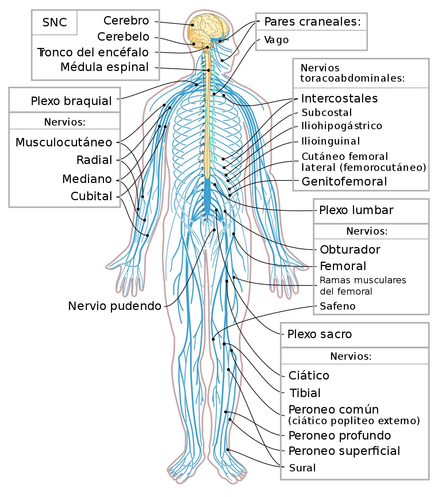

SISTEMA NERVIOSO SOMÁTICO.
Inervación sensitiva y motora a todas la partes del cuerpo , menos viseras de las cavidades corporales.
Moore ,K .L ., y Daley , A.F (2013).Anatomia con orientación clínica . Barcelona , España. Lippincott Williams y Wilkins . Capítulo 1 . Sistema nervioso . 47-47